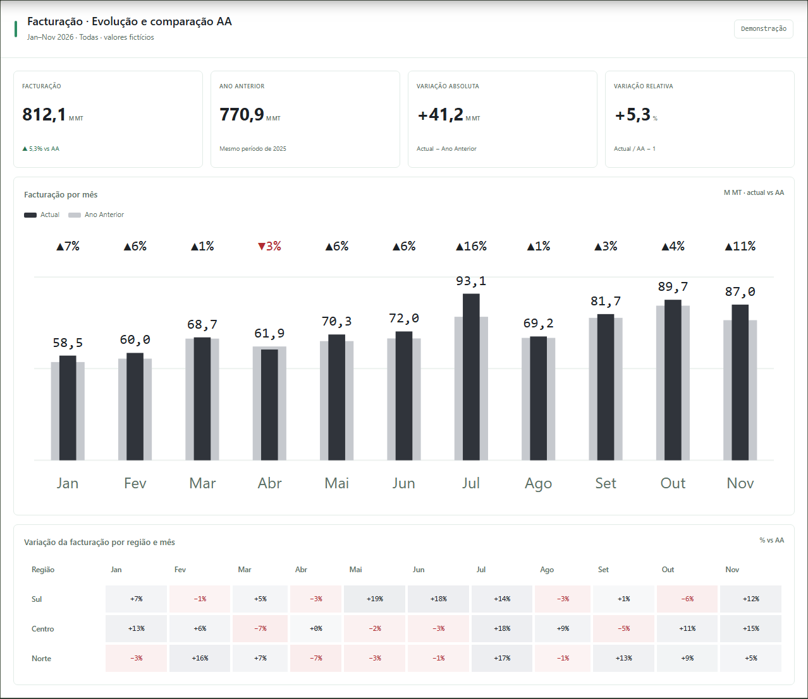

EXPLORAR DEMONSTRAÇÃO01 / VENDAS & METAS
Vendas que orientam a acção.
Onde estamos a crescer — e onde falta chegar à meta?
Comparar períodos, localizar desvios e orientar o acompanhamento comercial.
- Facturação
- Actual vs AA
- Realização de meta
VER O RACIOCÍNIO E A TÉCNICA
Contexto do portfólio: acompanhamento comercial e realização de metas. A demonstração ligada abaixo explora facturação e comparação com Ano Anterior.
01 / DADOS
Na demonstração: vendas mensais por região, valor actual e valor do Ano Anterior. O acompanhamento de metas é mostrado na galeria de capturas reais.
02 / PREPARAÇÃO
Definir o período de análise, uniformizar a região e reconciliar valores antes da comparação. Metas e vendas devem ser comparadas na mesma granularidade.
03 / MODELO
Calendário e Região como dimensões; Vendas como factos. Num modelo com metas, a tabela de objectivos mantém a sua granularidade própria.
04 / LEITURA & INSIGHTS
A matriz por região e mês permite localizar crescimento e quebra. O filtro de período mantém o Actual e o Ano Anterior comparáveis.
Variação % =
DIVIDE ( [Facturação] - [Facturação AA],
[Facturação AA] )Uma leitura comum do desempenho para escolher onde investigar e onde actuar.